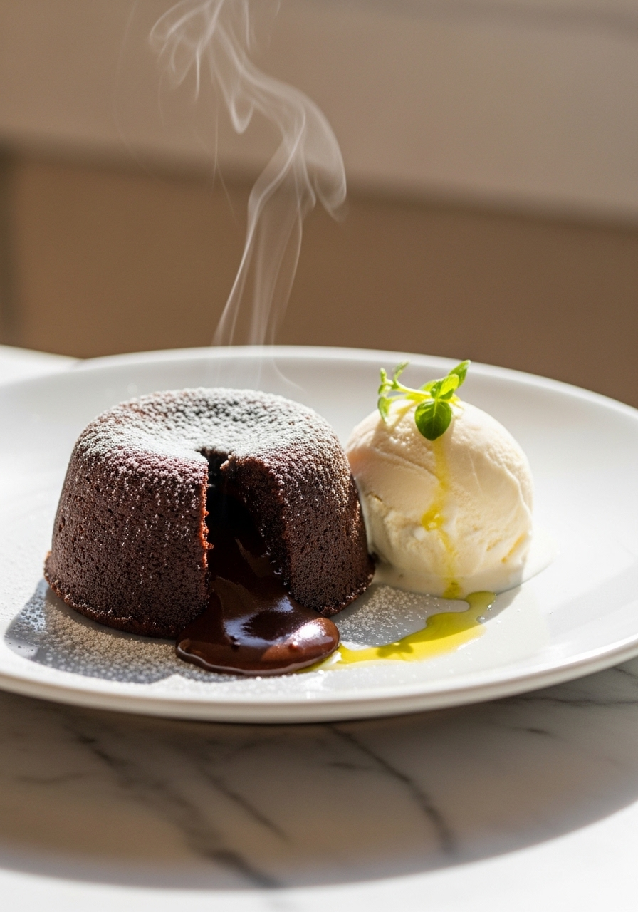
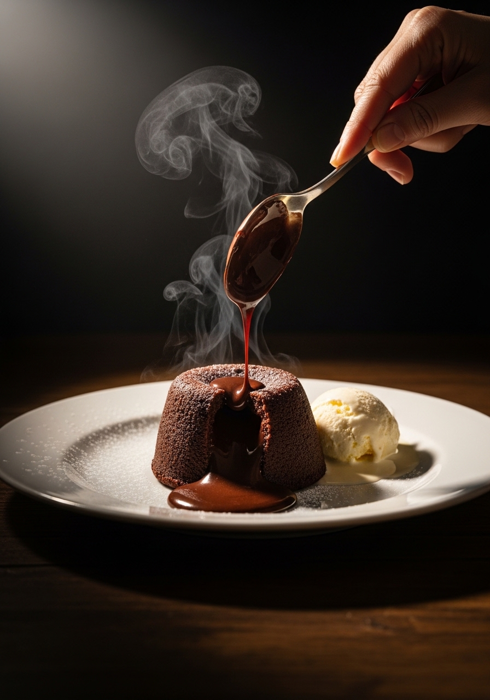

Il momento in cui il cioccolato fondente caldo cola da un tortino cotto alla perfezione è pura magia — ed è incredibilmente facile da ottenere a casa. 6 ingredienti, 5 minuti di preparazione, 12 minuti in forno. Questo è il dolce che stupisce sempre.
Salva su Pinterest
Pronto in 17 MinutiLa maggior parte delle ricette di tortino al cioccolato fallisce per un motivo: i tempi sono vaghi. Le temperature dei forni variano, le dimensioni degli stampini differiscono, e nessuno ti dice come appare davvero un tortino "quasi pronto". Questa ricetta risolve tutto. A 220°C con stampini da 180ml, i bordi si solidificano completamente in esattamente 10-12 minuti mentre il centro rimane liquido. Sai che è pronto quando la superficie sembra opaca e i bordi si staccano leggermente dai lati.
L'impasto richiede meno di 5 minuti per essere preparato. Sciogli il cioccolato e il burro, sbatti le uova con lo zucchero, incorpora tutto insieme con solo 2 cucchiai di farina. Tutto qui. Nessuna planetaria, nessun bagnomaria, nessuna tecnica complicata. Solo la temperatura giusta per il tempo giusto.
Il cioccolato è la protagonista di questo dolce, quindi la qualità conta. Usa una tavoletta di cioccolato fondente con 60-70% di cacao — questo intervallo ti dà un sapore profondo senza eccessiva amarezza. Lindt, Valrhona e Domori sono ottime scelte. Evita il cioccolato al latte: il maggiore contenuto di zucchero e latte cambia il modo in cui l'impasto si rapprende e non otterrai un cuore fondente pulito. Evita anche le gocce di cioccolato — contengono stabilizzanti che impediscono una fusione omogenea.
Ingredienti
Procedimento

L'impasto del tortino è perfetto da preparare in anticipo. Prepara l'impasto, riempi gli stampini, coprili bene con pellicola trasparente e mettili in frigorifero per massimo 24 ore. Quando sei pronto a servirli, lascia riposare gli stampini a temperatura ambiente per 15 minuti, poi cuoci 12-14 minuti poiché partono più freddi del solito.
I tortini cotti non si conservano bene — il centro si solidifica una volta raffreddato. Pianifica di servirli subito dopo la cottura. I tortini sformati mantengono la loro forma per circa 3-4 minuti prima che il centro si solidifichi completamente, quindi prepara in anticipo piatti, gelato e guarnizioni prima di sfornarli.
Cuore al caramello salato: Congela piccole palline di caramello salato e premile al centro di ogni stampino prima di cuocere per una doppia sorpresa. Cioccolato ed espresso: Aggiungi 1 cucchiaino di caffè solubile al cioccolato fuso — intensifica il sapore del cioccolato in modo straordinario senza sapere di caffè. Versione al cioccolato bianco: Sostituisci il fondente con cioccolato bianco e riduci il tempo di cottura di 1-2 minuti poiché il cioccolato bianco si rapprende prima.
Sì! Riempi gli stampini, coprili con pellicola trasparente e mettili in frigorifero per massimo 24 ore. Lasciali riposare 15 minuti a temperatura ambiente prima di cuocere e aggiungi 2 minuti extra al tempo di cottura poiché partono freddi.
Cioccolato fondente di alta qualità con il 60-70% di cacao è l'ideale. Dà un sapore profondo e si rapprende correttamente. Evita il cioccolato al latte e le gocce di cioccolato — entrambi contengono additivi che cambiano la cottura dell'impasto. Usa sempre tavolette, non gocce.
I bordi devono essere completamente sodi e staccarsi dai lati dello stampino, mentre il centro si muove ancora delicatamente quando agiti la teglia. A 220°C ci vogliono 10-12 minuti. Poiché ogni forno è diverso, cuoci un tortino di prova la prima volta.
La cottura eccessiva è l'unica causa reale. Anche 1-2 minuti in più a 220°C solidificano il centro. Tira fuori i tortini non appena i bordi sembrano sodi — il centro sembrerà ancora crudo ed è esattamente così che deve essere.
Sì. Usa uno stampo da muffin ben imburrato e riduci il tempo di cottura a 8-10 minuti poiché le dimensioni sono più piccole. Gli stampi in silicone da muffin sono particolarmente pratici e permettono di sformare facilmente senza passare il coltello sui bordi.